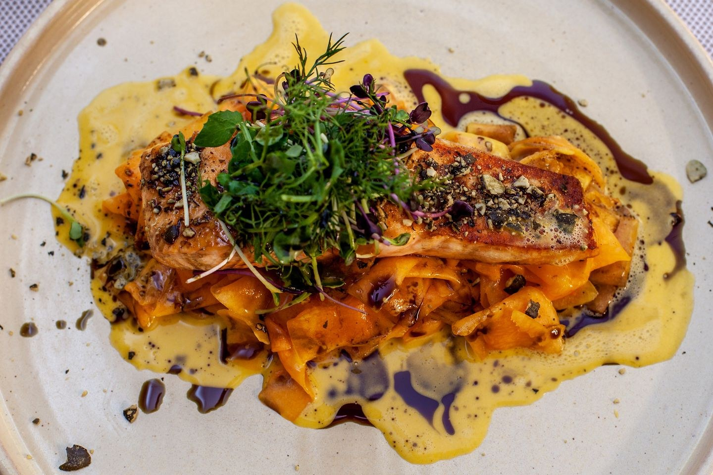
| 営業時間 | 火〜土 12:00〜22:00（温かい料理は21:00まで） |
|---|---|
| 定休日 | 日曜・月曜（秋に約2週間の休業あり） |
| 住所 | Brotmarkt 4, 87629 Füssen |
| 予約 | 推奨 — ☎ +49 8362 6174 ／ 公式サイト |
| 乳児連れ | ベビーカー 未確認／ハイチェア 未確認／おむつ替え台 未確認（根拠） |
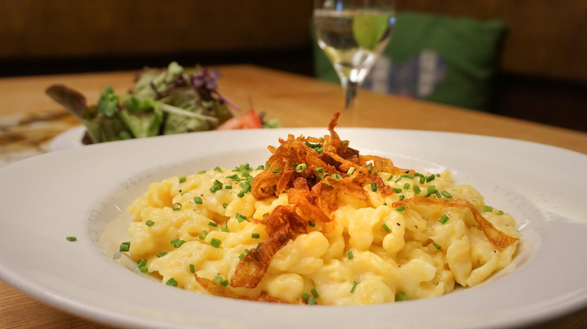
| 営業時間 | 月〜水 14:00〜21:00頃／金〜日 12:00〜21:00頃（キッチン。季節で前後） |
|---|---|
| 定休日 | 木曜 |
| 住所 | Ritterstraße 6, 87629 Füssen |
| 予約 | 可 — ☎ +49 1522 6786990 ／ 公式サイト |
| 乳児連れ | ベビーカー 未確認／ハイチェア 未確認／おむつ替え台 未確認 |
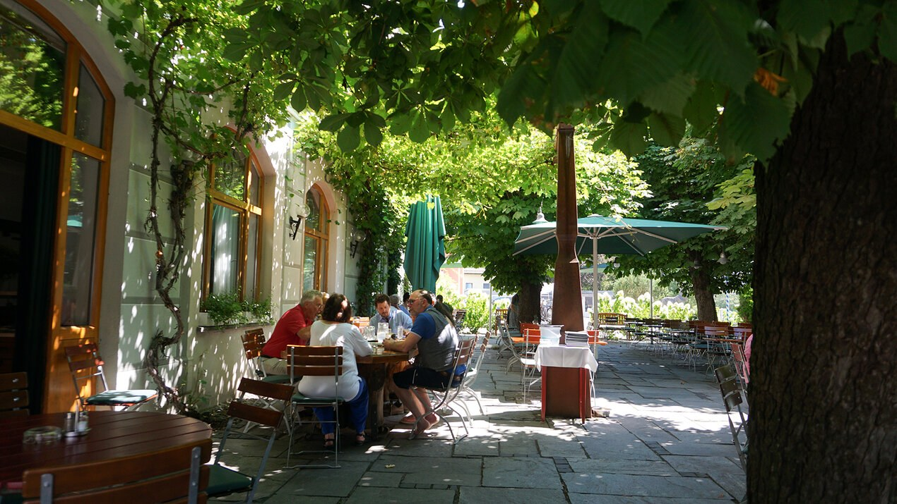
| 営業時間 | 毎日 11:30〜14:00／17:00〜23:00（温かい料理 11:30〜14:00・18:00〜21:30） |
|---|---|
| 定休日 | 記載なし（要確認） |
| 住所 | Kaiser-Maximilian-Platz 7, 87629 Füssen |
| 予約 | 推奨 — ☎ +49 8362 93980 ／ 公式サイト |
| 乳児連れ | ベビーカー 未確認／ハイチェア 未確認／おむつ替え台 未確認 |
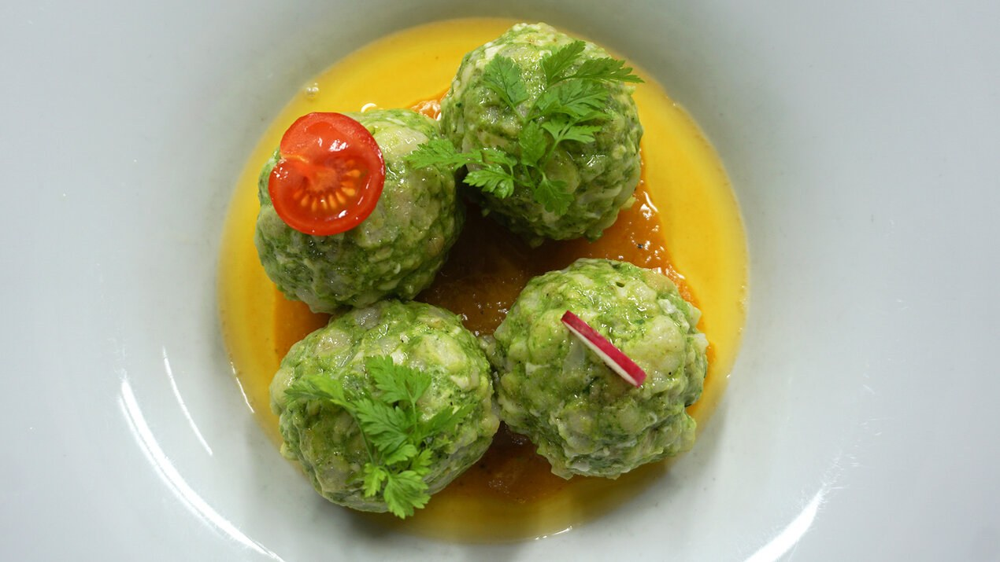
| 営業時間 | 水〜月 10:00〜22:00（温かい料理 11:30〜13:30／17:30〜20:30） |
|---|---|
| 定休日 | 火曜 |
| 住所 | Alatseestraße 8, 87629 Füssen-Bad Faulenbach |
| 予約 | 推奨 — ☎ +49 8362 91730 ／ 公式サイト |
| 乳児連れ | ベビーカー 未確認／ハイチェア 未確認／おむつ替え台 未確認（根拠） |
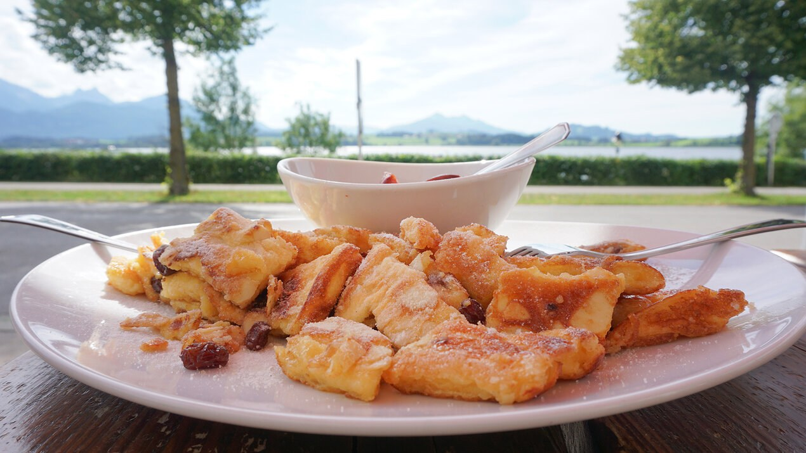
| 営業時間 | 2026-09-30 以降 木〜日 17:00〜22:00（キッチン 20:30 まで） |
|---|---|
| 定休日 | 月〜水（2027年5月の曜日は要確認） |
| 住所 | Höhenstraße 2, 87629 Füssen-Hopfen am See |
| 予約 | 要 — ☎ +49 8362 9262238 ／ 公式サイト |
| 乳児連れ | ベビーカー 未確認／ハイチェア 未確認／おむつ替え台 未確認（根拠） |
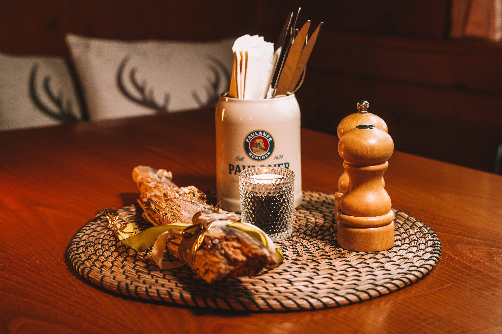
| 営業時間 | 火〜日 11:30〜21:30 |
|---|---|
| 定休日 | 月曜 |
| 住所 | Ritterstraße 4, 87629 Füssen |
| 予約 | 可 — ☎ +49 8362 7759 ／ 公式サイト ／ 予約サイト |
| 乳児連れ | ベビーカー 未確認／ハイチェア 未確認／おむつ替え台 未確認 |
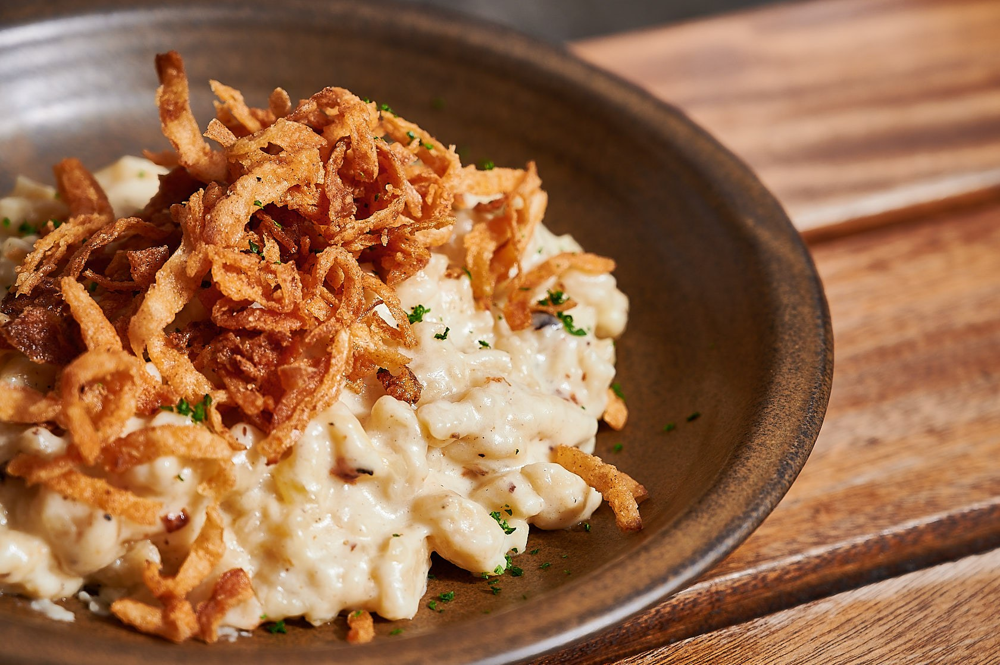
| 営業時間 | 日・月・木・金・土 12:00〜22:00（公式は「最新はGoogleで」と案内） |
|---|---|
| 定休日 | 火曜・水曜（Wanderlog 掲載の Google 営業時間による・要確認） |
| 住所 | Schrannengasse 17, 87629 Füssen |
| 予約 | 不可 — ☎ +49 8362 7824 ／ 公式サイト |
| 乳児連れ | ベビーカー 未確認／ハイチェア あり／おむつ替え台 未確認（根拠） |
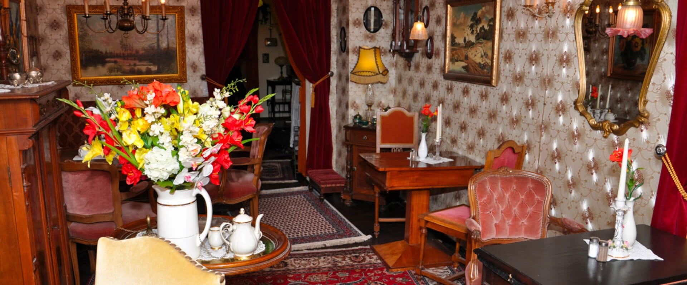
| 営業時間 | 12:00〜15:00／17:00〜23:00（料理 昼12:00〜16:00・夜17:00〜21:00） |
|---|---|
| 定休日 | 火曜・水曜 |
| 住所 | Drehergasse 48, 87629 Füssen |
| 予約 | 推奨 — ☎ +49 8362 9300949 ／ 公式サイト ／ 予約サイト |
| 乳児連れ | ベビーカー 未確認／ハイチェア あり／おむつ替え台 未確認（根拠） |
| 営業時間 | 火〜土 キッチン 11:30〜14:00／17:00〜21:00、日祝 11:00〜15:00 |
|---|---|
| 定休日 | 月曜 |
| 住所 | Kemptener Straße 68, 87629 Füssen |
| 予約 | 可 — 公式サイト ／ 予約サイト |
| 乳児連れ | ベビーカー 未確認／ハイチェア 未確認／おむつ替え台 未確認（根拠） |
| 営業時間 | 月・火 11:00〜17:30（料理 11:30〜16:30）／水〜日 11:00〜20:00（料理 11:30〜16:30・18:00〜18:45） |
|---|---|
| 定休日 | 12〜4月は火曜休 |
| 住所 | Am Alatsee 1, 87629 Füssen |
| 予約 | 推奨 — ☎ +49 8362 6205 ／ 公式サイト |
| 乳児連れ | ベビーカー 未確認／ハイチェア 未確認／おむつ替え台 未確認 |
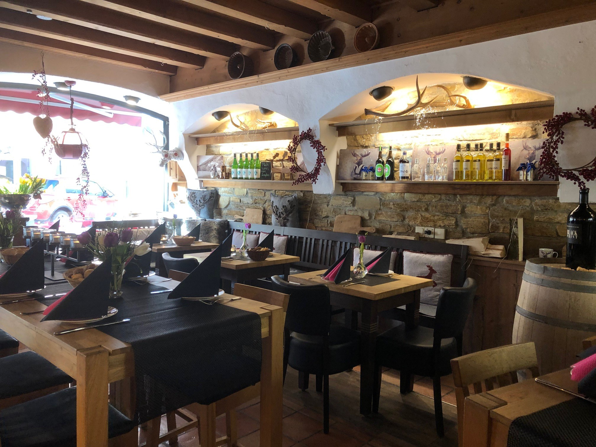
| 営業時間 | 月・火・土 11:30〜20:00／木・金 11:30〜21:00（キッチンは閉店1時間前まで） |
|---|---|
| 定休日 | 水曜・日曜 |
| 住所 | Drehergasse 42, 87629 Füssen |
| 予約 | 可 — ☎ +49 8362 9390978 ／ 公式サイト |
| 乳児連れ | ベビーカー 未確認／ハイチェア あり／おむつ替え台 未確認（根拠） |
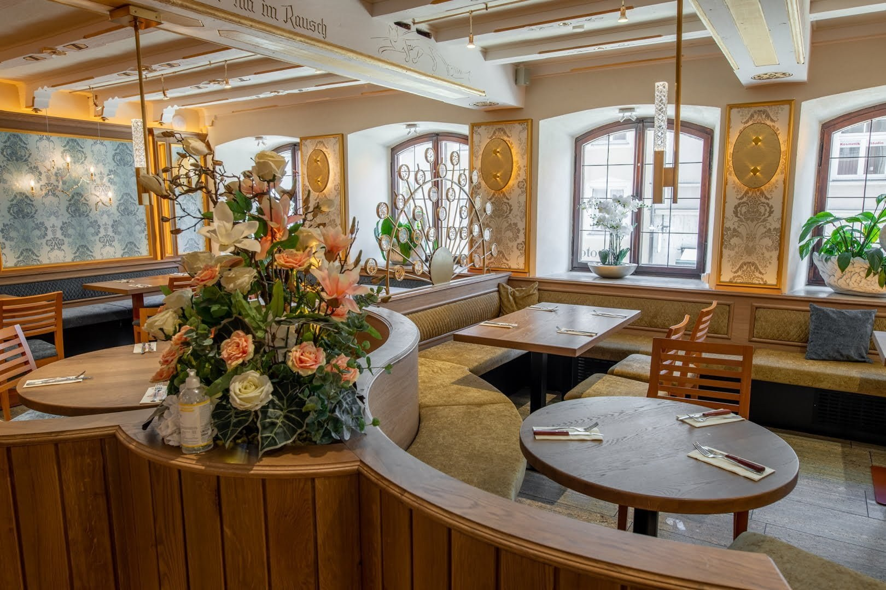
| 営業時間 | 毎日 11:30〜22:00 |
|---|---|
| 定休日 | なし（Wanderlog 掲載の Google 営業時間による・要確認） |
| 住所 | Reichenstraße 17, 87629 Füssen |
| 予約 | 可 — ☎ +49 8362 9251795 ／ 公式サイト |
| 乳児連れ | ベビーカー 未確認／ハイチェア あり／おむつ替え台 未確認（根拠） |
| 営業時間 | 毎日営業（公式は「Täglich geöffnet」とのみ記載。時間は要確認） |
|---|---|
| 定休日 | なし（公式記載による） |
| 住所 | Alpseestraße 16, 87645 Schwangau-Hohenschwangau |
| 予約 | 推奨 — ☎ +49 8362 81990 ／ 公式サイト |
| 乳児連れ | ベビーカー 未確認／ハイチェア 未確認／おむつ替え台 未確認（根拠） |
| 営業時間 | 水〜日 12:00〜13:30／17:45〜20:00 |
|---|---|
| 定休日 | 月曜・火曜 |
| 住所 | Mitteldorf 10, 87645 Schwangau |
| 予約 | 要 — ☎ +49 8362 9800 ／ 公式サイト |
| 乳児連れ | ベビーカー 未確認／ハイチェア あり／おむつ替え台 未確認（根拠） |
| 営業時間 | 金〜火 12:00〜22:00 |
|---|---|
| 定休日 | 水曜・木曜（Wanderlog 掲載の Google 営業時間による・要確認） |
| 住所 | Füssener Straße 3, 87645 Schwangau |
| 予約 | 可 — ☎ +49 8362 986191 ／ 公式サイト |
| 乳児連れ | ベビーカー 未確認／ハイチェア 未確認／おむつ替え台 未確認 |
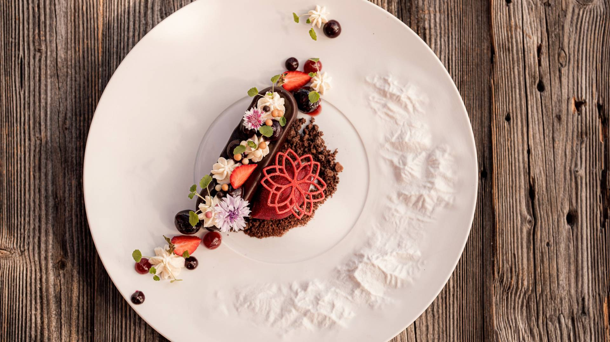
| 営業時間 | 毎日 12〜14時／カフェ14:30〜16:30／18〜21時 |
|---|---|
| 定休日 | なし |
| 住所 | Am Ehberg 31, 87645 Schwangau-Horn |
| 予約 | 推奨 — ☎ +49 8362 8888 ／ 公式サイト ／ 予約サイト |
| 乳児連れ | ベビーカー 未確認／ハイチェア あり／おむつ替え台 未確認（根拠） |
| 営業時間 | 夏季 毎日 9:00〜18:00／冬季 10:00〜17:00 |
|---|---|
| 定休日 | 12/24・25・31、1/1 |
| 住所 | Neuschwansteinstraße 17, 87645 Schwangau-Hohenschwangau |
| 予約 | 要確認 — ☎ +49 8362 81110 ／ 公式サイト |
| 乳児連れ | ベビーカー 未確認／ハイチェア 未確認／おむつ替え台 未確認（根拠） |
| 営業時間 | 毎日 10:00〜17:30（バス上り 9:00〜毎時、最終下り 17:30） |
|---|---|
| 定休日 | なし（冬季は要確認） |
| 住所 | Bleckenau 2, 87645 Schwangau |
| 予約 | 不可 — ☎ +49 8362 81181 ／ 公式サイト |
| 乳児連れ | ベビーカー 未確認／ハイチェア あり／おむつ替え台 未確認（根拠） |
| 営業時間 | 毎日 10:00〜17:00（温かい料理 10:30〜16:00） |
|---|---|
| 定休日 | なし |
| 住所 | Alpseestraße 5, 87645 Schwangau-Hohenschwangau |
| 予約 | 要確認 — ☎ +49 8362 703910 ／ 公式サイト |
| 乳児連れ | ベビーカー 未確認／ハイチェア 未確認／おむつ替え台 未確認（根拠） |
| 営業時間 | 晴天時 11:30〜18:00（セルフサービスのテラスのみ） |
|---|---|
| 定休日 | 悪天候時 |
| 住所 | Alpseestraße 27, 87645 Schwangau-Hohenschwangau |
| 予約 | 不可 — ☎ +49 8362 70300 ／ 公式サイト |
| 乳児連れ | ベビーカー 未確認／ハイチェア 未確認／おむつ替え台 未確認（根拠） |
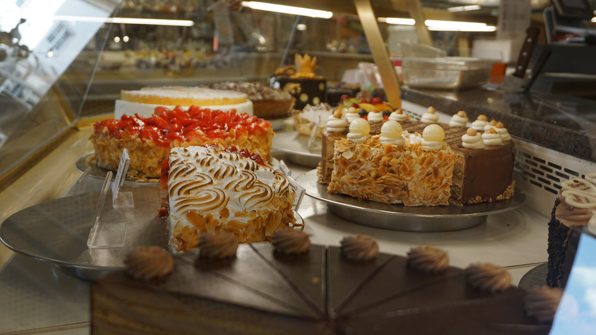
| 営業時間 | カフェ・レストラン Lumen 毎日 8:30〜22:00（夏季は延長）／コンディトライ売場 8:30〜18:00（日曜 7:30〜18:00） |
|---|---|
| 定休日 | 無休（公式に定休日の記載なし） |
| 住所 | Prinzregentenplatz 2–4, 87629 Füssen |
| 予約 | 可 — ☎ +49 8362 930180 ／ 公式サイト |
| 乳児連れ | ベビーカー 未確認／ハイチェア 未確認／おむつ替え台 未確認（根拠） |
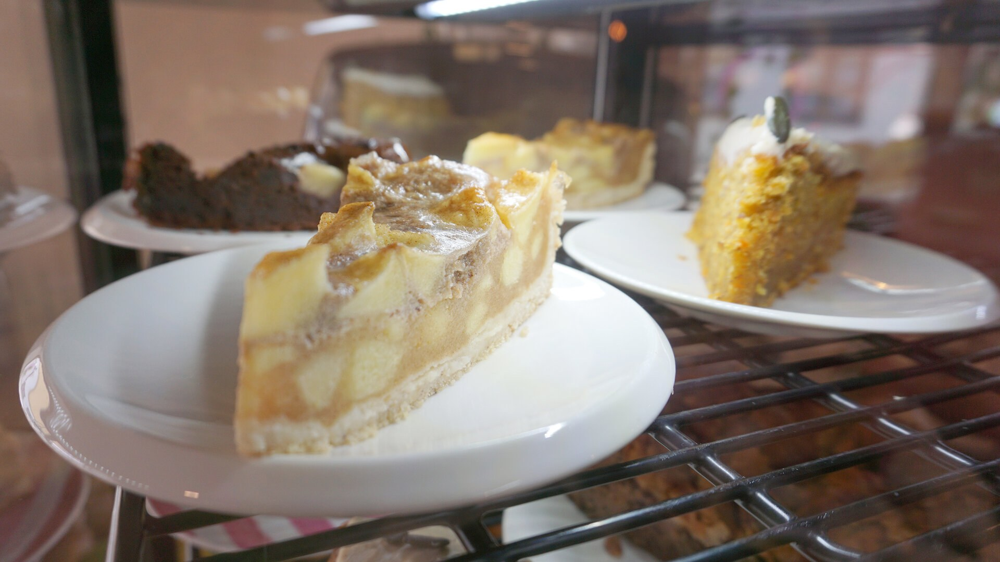
| 営業時間 | 月・木〜土 9:00〜17:00／日 9:00〜16:00 |
|---|---|
| 定休日 | 火・水曜 |
| 住所 | Schrannengasse 6, 87629 Füssen |
| 予約 | 要確認 — ☎ +49 176 20611030 ／ 公式サイト |
| 乳児連れ | ベビーカー 未確認／ハイチェア 未確認／おむつ替え台 未確認（根拠） |
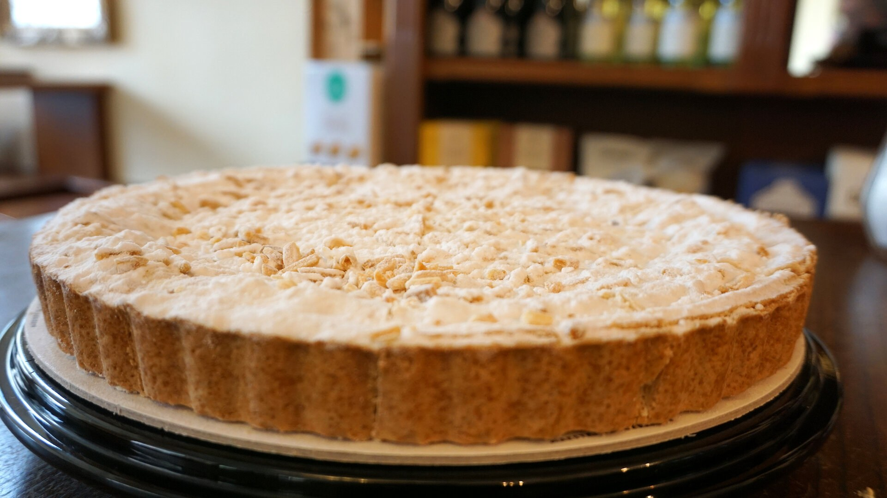
| 営業時間 | 月〜土 8:00〜18:00／日 9:00〜16:00 |
|---|---|
| 定休日 | 無休（観光局記事に「365日営業」） |
| 住所 | Ritterstraße 9, 87629 Füssen |
| 予約 | 不要 — ☎ +49 8362 3001030 ／ 公式サイト |
| 乳児連れ | ベビーカー 未確認／ハイチェア 未確認／おむつ替え台 未確認 |
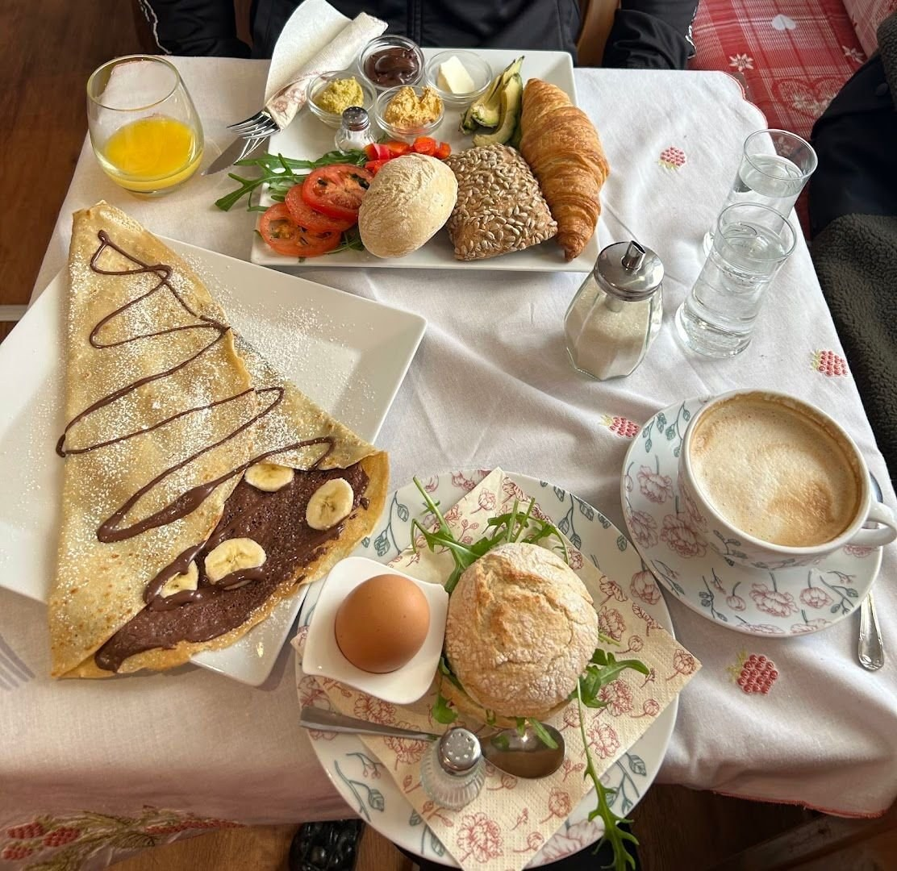
| 営業時間 | 毎日 9:00〜18:00 |
|---|---|
| 定休日 | 無休（公式に「月〜日」と記載） |
| 住所 | Magnusplatz 6, 87629 Füssen |
| 予約 | 不要 — ☎ +49 8362 9899750 ／ 公式サイト |
| 乳児連れ | ベビーカー 未確認／ハイチェア 未確認／おむつ替え台 未確認（根拠） |
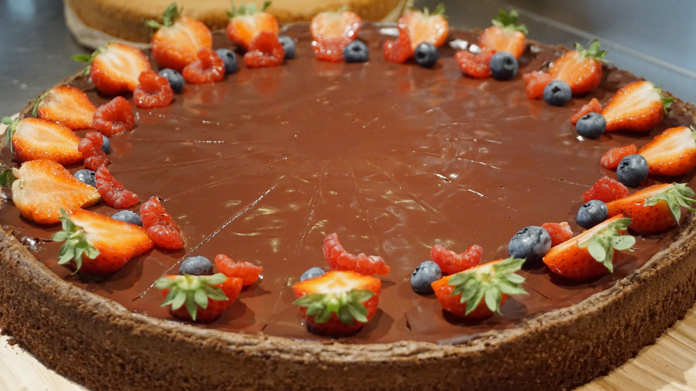
| 営業時間 | 毎日 9:00〜22:00（Google 掲載値。季節で変動あり、公式は祝日の朝食ビュッフェ 9:00〜12:00・要予約と告知） |
|---|---|
| 定休日 | 無休（要確認） |
| 住所 | Uferstraße 21, 87629 Füssen-Hopfen am See |
| 予約 | 推奨 — ☎ +49 8362 9261320 ／ 公式サイト |
| 乳児連れ | ベビーカー 可／ハイチェア 未確認／おむつ替え台 未確認（根拠） |
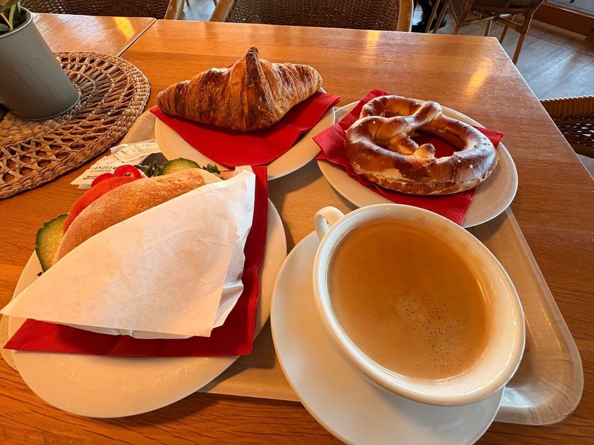
| 営業時間 | 月〜土 6:30〜18:00／日・祝 13:00〜17:00 |
|---|---|
| 定休日 | 無休（日祝は午後のみ） |
| 住所 | Füssener Straße 15, 87645 Schwangau |
| 予約 | 不要 — ☎ +49 8362 8220 ／ 公式サイト |
| 乳児連れ | ベビーカー 未確認／ハイチェア 未確認／おむつ替え台 未確認 |
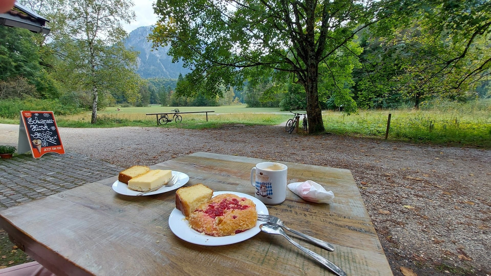
| 営業時間 | 毎日 10:00〜18:00（Google 掲載値、月曜 11:00〜） |
|---|---|
| 定休日 | 無休（冬季は要確認） |
| 住所 | Königssträßchen 10, 87645 Schwangau |
| 予約 | 不要 |
| 乳児連れ | ベビーカー 未確認／ハイチェア 未確認／おむつ替え台 未確認（根拠） |
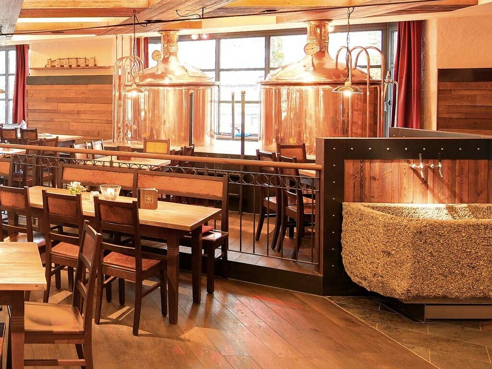
| 営業時間 | 毎日 10:00〜22:00（温かい料理 12〜20時） |
|---|---|
| 定休日 | なし |
| 住所 | Gipsmühlweg 5, 87645 Schwangau |
| 予約 | 推奨 — ☎ +49 8362 9264680 ／ 公式サイト ／ 予約サイト |
| 乳児連れ | ベビーカー 未確認／ハイチェア あり／おむつ替え台 あり（根拠） |
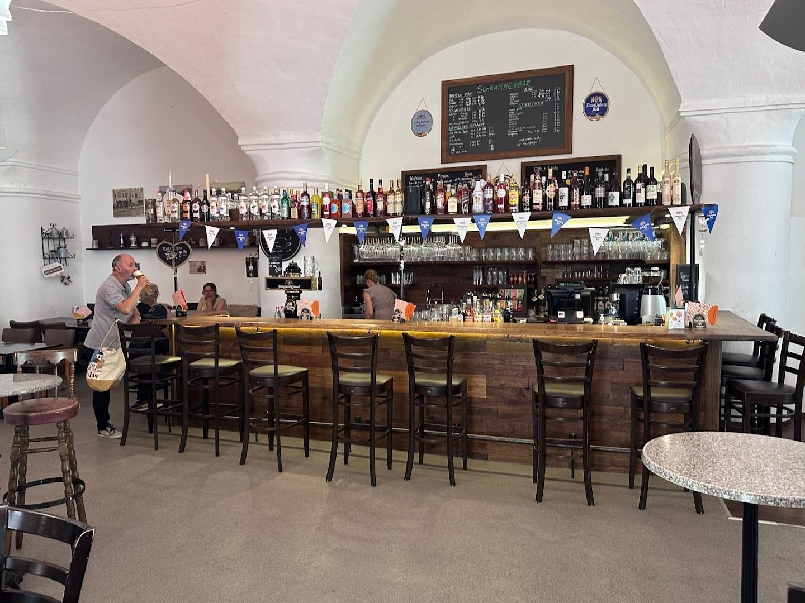
| 営業時間 | 月〜木 9:30〜19:00／金 9:30〜22:00／土 9:30〜16:00（Google 掲載値・店舗ごとに異なる） |
|---|---|
| 定休日 | 日曜 |
| 住所 | Schrannengasse 12, 87629 Füssen |
| 予約 | 不要 — 公式サイト |
| 乳児連れ | ベビーカー 未確認／ハイチェア 未確認／おむつ替え台 未確認 |
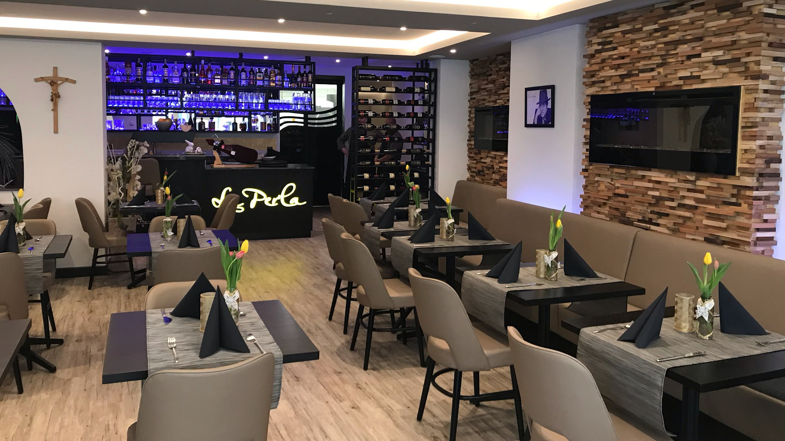
| 営業時間 | 火〜日 11:30〜21:30（Google 掲載値） |
|---|---|
| 定休日 | 月曜 |
| 住所 | Drehergasse 44, 87629 Füssen |
| 予約 | 推奨 — ☎ +49 8362 7155 ／ 公式サイト |
| 乳児連れ | ベビーカー 未確認／ハイチェア 未確認／おむつ替え台 未確認（根拠） |
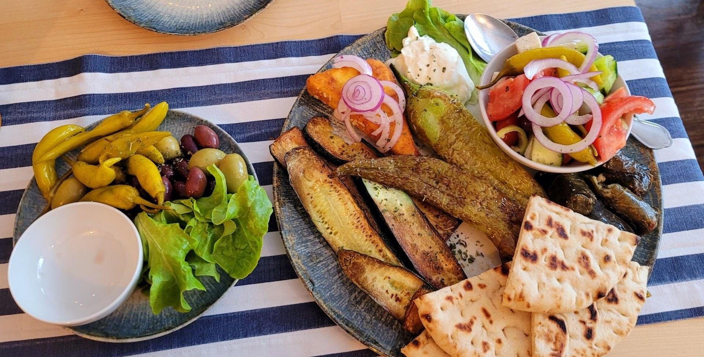
| 営業時間 | 木〜火 11:30〜22:00（Google 掲載値） |
|---|---|
| 定休日 | 水曜 |
| 住所 | Brunnengasse 20, 87629 Füssen |
| 予約 | 要確認 — ☎ +49 8362 8194910 ／ 公式サイト |
| 乳児連れ | ベビーカー 未確認／ハイチェア 未確認／おむつ替え台 未確認 |
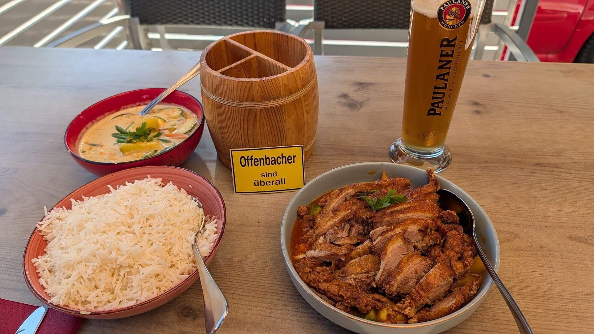
| 営業時間 | 火〜木 12:00〜21:00／金・日 12:00〜21:30／土 12:00〜22:00（Google 掲載値） |
|---|---|
| 定休日 | 月曜 |
| 住所 | Kemptener Straße 16, 87629 Füssen |
| 予約 | 要確認 — ☎ +49 8362 8836943 |
| 乳児連れ | ベビーカー 未確認／ハイチェア 未確認／おむつ替え台 未確認 |
| 営業時間 | 月〜土 11:00〜15:00・17:00〜22:00／日 12:00〜22:00（Google 掲載値） |
|---|---|
| 定休日 | 無休 |
| 住所 | Reichenstraße 33, 87629 Füssen |
| 予約 | 不要 — ☎ +49 8362 924905 ／ 公式サイト |
| 乳児連れ | ベビーカー 未確認／ハイチェア 未確認／おむつ替え台 未確認 |
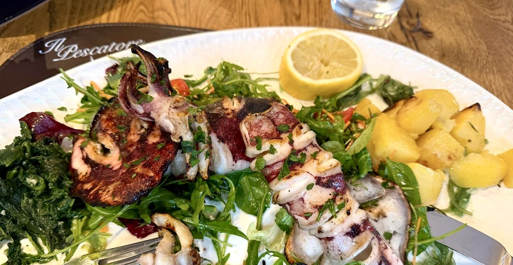
| 営業時間 | 月・火・木・金 12:00〜14:30／17:30〜22:30、土・日 12:00〜22:30（料理は21:00まで） |
|---|---|
| 定休日 | 水曜 |
| 住所 | Franziskanergasse 13, 87629 Füssen |
| 予約 | 推奨 — ☎ +49 8362 924343 ／ 公式サイト |
| 乳児連れ | ベビーカー 未確認／ハイチェア 未確認／おむつ替え台 未確認 |
| 営業時間 | 月〜金 11:30〜15:00／17:00〜23:00、土・日 17:00〜23:00（Google 掲載値） |
|---|---|
| 定休日 | 無休（土日は夜のみ） |
| 住所 | Luitpoldstraße 1, 87629 Füssen |
| 予約 | 推奨 — ☎ +49 8362 8193536 |
| 乳児連れ | ベビーカー 未確認／ハイチェア 未確認／おむつ替え台 未確認 |
本ガイドは個人利用目的で作成。掲載情報は2026年9月時点の調査に基づく。写真出典: 各店の公式サイト・観光局（fuessen.de／schwangau.de 等）・実食ブログの掲載写真（出典は各カードに明記）。地図: © OpenStreetMap contributors
{kind=link}
{kind=link}
{kind=link}
{kind=link}
{kind=link}
{kind=link}
{kind=link}
{kind=link}
{kind=link}
{kind=link}
{kind=link}
{kind=link}
{kind=link}
{kind=link}
{kind=link}
{kind=link}
{kind=link}